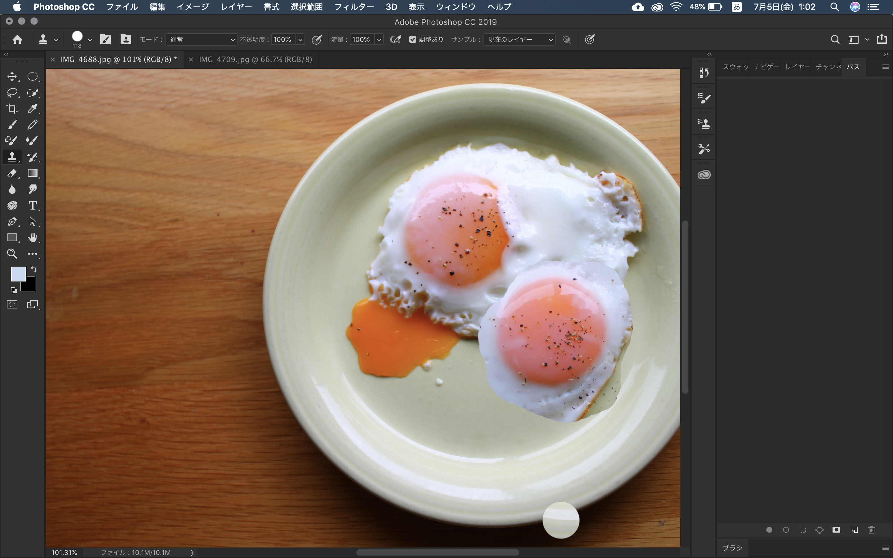

study
photoshopを使って
photoshopで画像編集をする。
目玉焼きの黄身増えたら面白いかなあって思ったのでとりあえず焼く。
 そもそも目玉焼きを焼くことから失敗。
そもそも目玉焼きを焼くことから失敗。
 焼き直してみる。
焼き直してみる。

とりあえず合体させてみる。
コピースタンプツールで黄身と白身をそれぞれつけて、なるべく自然になるように調整。
目玉焼きを二枚焼いたことによって、白身の色とか黄身とか色々調整しやすかった。
遠目でみると、もとから黄身が二つある贅沢な目玉焼きに見えるぐらいにまではなった！！！
20190508 ソフトウェア・ネットワーク演習Ⅰ